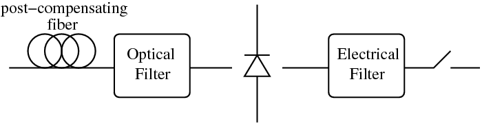

receiver_ook
Complete OOK receiver (POST fiber+OBPF+photodiode+LPF).
IRIC=RECEIVER_OOK(ICH,X)
[IRIC,SN]=RECEIVER_OOK(ICH,X)
IRIC=RECEIVER_OOK(ICH,X) returns the received current IRIC
of channel ICH of an OOK transmission using the following
receiver:
Figure 2.7:
OOK receiver.
|

|
[IRIC,SN]=RECEIVER_OOK(ICH,X) also returns the vector
SN containing the FFT coefficients of the electric field
after the optical filter. SN is used by ber_kl.
X is a structure of fields:
- X.oftype = optical filter (OBPF) type (see myfilter)
- X.obw = OBPF 3 dB bandwidth normalized to the symbol rate.
- X.oord = optical filter order (for special filters, see myfilter)
- X.eftype = electrical filter (LPF) type (see myfilter)
- X.ebw = LPF 3-dB bandwidth normalized to the symbol rate.
- X.eord = electrical filter order (for special filters, see
myfilter)
Optional parameters of X:
- X.dpost = post compensating fiber cumulated dispersion [ps/nm]
- X.slopez = post compensating fiber cumulated slope [ps/nm^2]
- X.lambda = wavelength [nm] at which the post compensating
fiber has a cumulated dispersion equal to X.dpost.
- X.b2b = 'b2b' evaluates the current in back-to-back configuration,
i.e. with the transmitter connected directly to the receiver. With
this option the values of x.dpost and x.slopez are
discarded.
The post-compensating fiber is assumed as a purely ideal-linear fiber,
while the photodiode is ideal (abs(.)^2).
|
Note: This function works over a copy of the electric field.
All fields of the global variable GSTATE are left unchanged. |
receiver_dpsk
Optilux toolbox reference manual